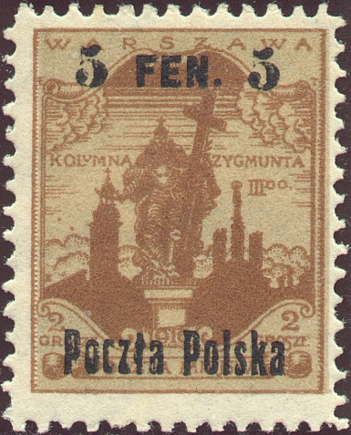
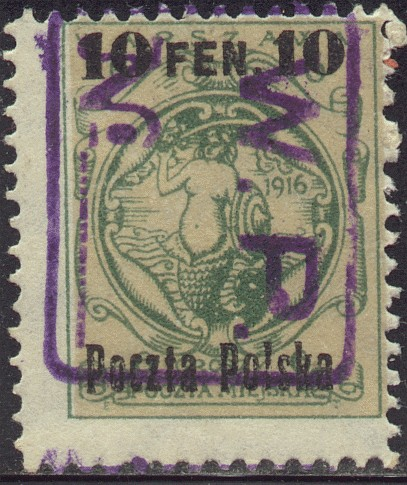
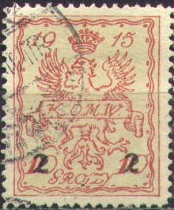
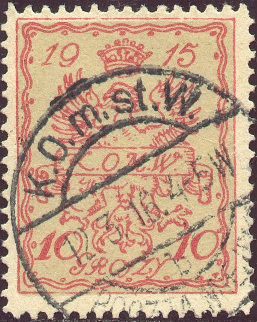
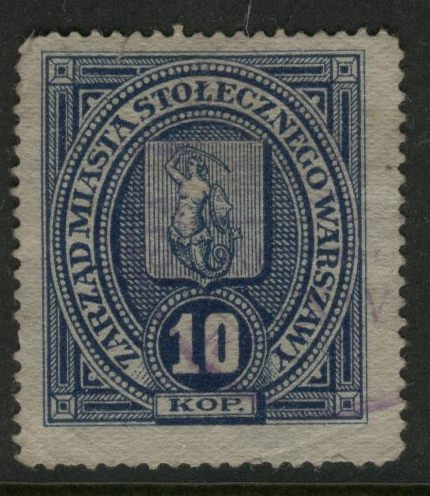

{kind=link}



Note: on my website many of the
pictures can not be seen! They are of course present in the
catalogue;
contact me if you want to purchase the catalogue.
More information about the local stamps of Poland can be found at: http://home.golden.net/~medals/locals.html
'5 FEN. 5' on 2 g brown and yellow '10 FEN. 10' on 6 g green and yellow '25 FEN. 25' on 10 g red and yellow '50 FEN. 50' on 20 g blue and yellow
These stamps are perforated 11 1/2. Most values seem to exist with inverted overprint (value: ***)
Value of the stamps |
|||
vc = very common c = common * = not so common ** = uncommon |
*** = very uncommon R = rare RR = very rare RRR = extremely rare |
||
| Value | Unused | Used | Remarks |
| 5 f on 2 g | c | c | |
| 10 f on 6 g | c | * | |
| 25 f on 10 g | * | * | |
| 50 f on 20 g | * | * | |

(Typical cancellation, violet 'W.P. No' in a rectangle with
rounded corners)
5 g green and yellow 5 g blue and green 10 g black and brown 10 g red and brown
Value of the stamps |
|||
vc = very common c = common * = not so common ** = uncommon |
*** = very uncommon R = rare RR = very rare RRR = extremely rare |
||
| Value | Unused | Used | Remarks |
| 5 g green and yellow | *** | RR | |
| 5 g blue and green | ** | *** | |
| 10 g black and brown | *** | RR | |
| 10 g red and brown | c | c | |
Surcharged

(reduced sizes)
'* 2 gr. *' on 10 gr red and brown '* 6 gr. *' on 5 gr green and brown '2 2' on 10 gr red and brown '6 6' on 5 gr green and brown
Value of the stamps |
|||
vc = very common c = common * = not so common ** = uncommon |
*** = very uncommon R = rare RR = very rare RRR = extremely rare |
||
| Value | Unused | Used | Remarks |
| '* 2 gr. *' on 10 g | c | c | |
| '* 6 gr. *' on 5 g | c | c | |
| '2 2' on 10 g | c | c | |
| 6 on 5 g | c to R | c to R | Many types |
Several other (rare) surcharges exist (see example below). If anybody posesses pictures, please contact me!

Cancel with "K.o.m.W. POCZTA MIEJSKA" with arms of
Warsaw in the center (no date)
A much larger "2" surcharge.
Cancellations

("K.O.m.st.W. POCZTA MIEJSKA" with date in the center)
Cancel consisting of an oval, with "K.G.S.T.M. WARSZAWY
POCTZA MIEJSKA" with date in the center, reduced size.
I've seen several values with a large red or violet circular cancel with 'Komisariat' in the center. These were fiscal cancels (police revenue).
(Bisected for printed matters)

Fiscal stamps of Warsaw
The above fiscal stamp 10 k red on yellow was issued in 1886 in Warsaw (Police revenue). The blue stamp in similar design with inscription "ZARZAD MIASTA STOLECZNECO WARSZAWY" was issued in 1916.
Fiscal stamp of Warsaw of 1880, a 10 k black and blue and a 30 k
black and red were issued. They also exist perforated (issued in
1883).
{kind=link}
{kind=link}
{kind=link}
{kind=link}